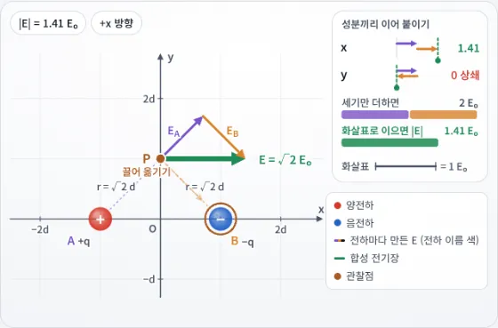
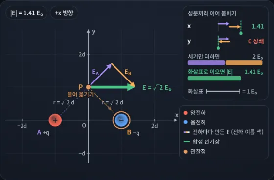
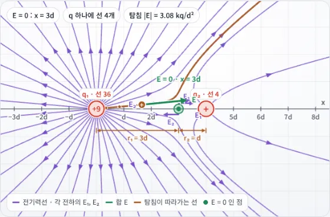
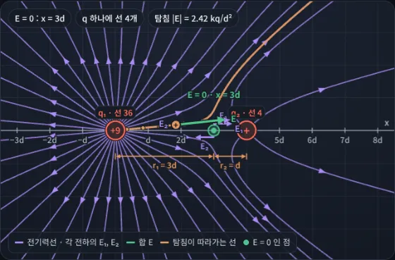

B1물리학Ⅱ · Ⅱ. 전자기장
전기장과 정전기 유도
개념 12개 가운데 2개를 실험 페이지로 만들었어요. 순서대로 보면 단원의 흐름이 이어져요.
B1-01준비 중
전하·대전과 전하량 보존
문지르기만 했는데 왜 두 물체가 반대 부호로 대전될까?
B1-02준비 중
쿨롱 법칙과 전기장의 정의
전하가 떨어진 곳에 힘을 미치는 것을 왜 '전기장'으로 설명할까?
-


B1-03
전기장의 벡터 중첩 (2·3차원)
전하가 여러 개일 때 한 점의 전기장을 실수 없이 합치는 방법은?
-


B1-04
전기력선과 전기장이 0인 점
전기력선 그림만 보고 두 전하의 부호와 크기 비를 어떻게 읽을까?
B1-05준비 중
전위차와 균일한 전기장
전위는 무엇이고, 전위 그래프의 기울기는 왜 전기장일까?
B1-06준비 중
균일한 전기장 속 대전 입자의 운동과 힘의 평형
전기장 속 입자 운동은 왜 포물선 운동 공식으로 풀리고, 매달린 대전 구는 어떻게 비교할까?
B1-07준비 중
도체와 절연체 — 자유 전자 이동과 유전 분극
같은 전기장 속에서 도체와 절연체는 왜 다르게 반응하고, 중성 물체는 왜 끌려올까?
B1-08준비 중
도체의 정전기 유도·접지·검전기
대전체를 대지도 않고 도체를 대전시키려면 어떤 순서가 필요할까?
B1-09준비 중
정전기의 이용과 방전·접지
생활 속 정전기 장치들은 결국 어떤 원리 하나로 설명될까?
B1-10준비 중
축전기의 전기 용량과 에너지
축전기는 전하를 어떻게 저장하고, 저장된 에너지는 왜 QV가 아니라 1/2 QV일까?
B1-11준비 중
V 일정 vs Q 일정, 그리고 축전기의 이용
축전기의 간격이나 유전체를 바꿀 때 무엇이 변하고 무엇이 그대로일까?
B1-12준비 중
축전기의 연결·유전체 부분 삽입·전하 재분배
여러 축전기가 연결되거나 유전체가 일부만 들어가면 어떻게 하나의 용량으로 바꿀까?